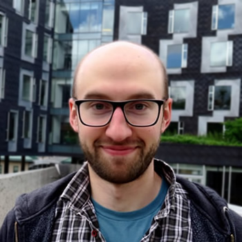

Adam HarleyI am joining Prof. Leonidas Guibas' lab at Stanford University, as a postdoc. I recently completed my Ph.D. at Carnegie Mellon University, in The Robotics Institute. I worked with Dr. Katerina Fragkiadaki, on machine learning and computer vision. Before this, I did a Master of Science in computer science, with Dr. Kosta Derpanis. Even earlier, I did a Bachelor of Arts in psychology. I recently co-organized Perception Through Structured Generative Models at ECCV 2020, and Minds vs. Machines: How far are we from the common sense of a toddler? at CVPR 2020. |
 |
Publications:

|
Particle Videos Revisited: Tracking Through Occlusions Using Point TrajectoriesarXiv 2022 Adam W. Harley, Zhaoyuan Fang, Katerina Fragkiadaki project page paper |
Track, Check, Repeat: An EM Approach to Unsupervised TrackingCVPR 2021 Adam W. Harley, Yiming Zuo, Jing Wen, Ayush Mangal, Shubhankar Potdar, Ritwick Chaudhry, Katerina Fragkiadaki project page paper code |

|
CoCoNets: Continuous Contrastive 3D Scene RepresentationsCVPR 2021 Shamit Lal, Mihir Prabhudesai, Ishita Mediratta, Adam W. Harley, Katerina Fragkiadaki project page paper |

|
Move to See Better: Self-Improving Embodied Object DetectionBMVC 2021 Zhaoyuan Fang, Ayush Jain, Gabriel Sarch, Adam W. Harley, Katerina Fragkiadaki project page paper |

|
Disentangling 3D Prototypical Networks For Few-Shot Concept LearningICLR 2021 Mihir Prabhudesai, Shamit Lal, Darshan Patil, Hsiao-Yu Fish Tung, Adam W. Harley, Katerina Fragkiadaki project page paper |
Tracking Emerges by Looking Around Static Scenes, with Neural 3D MappingECCV 2020 Adam W. Harley, Shrinidhi KL, Paul Schydlo, Katerina Fragkiadaki paper ECCV Daily interview |

|
3D Object Recognition By Corresponding and Quantizing Neural 3D Scene RepresentationsCVPR workshops 2020 Mihir Prabhudesai, Shamit Lal, Hsiao-Yu Fish Tung, Adam W. Harley, Shubhankar Potdar, Katerina Fragkiadaki project page paper workshop paper |
Embodied Language Grounding With 3D Visual Feature RepresentationsCVPR 2020 Mihir Prabhudesai, Hsiao-Yu Fish Tung, Syed Ashar Javed, Maximilian Sieb, Adam W. Harley, Katerina Fragkiadaki project page paper |

|
Learning from Unlabelled Videos Using Contrastive Predictive Neural 3D MappingICLR 2020 Adam W. Harley, Fangyu Li, Shrinidhi K. Lakshmikanth, Xian Zhou, Hsiao-Yu Fish Tung, Katerina Fragkiadaki project page paper bibtex |
VR Facial Animation via Multiview Image TranslationSIGGRAPH 2019 Shih-En Wei, Jason Saragih, Tomas Simon, Adam W. Harley, Stephen Lombardi, Michal Perdoch, Alexander Hypes, Dawei Wang, Hernan Badino, Yaser Sheikh project page paper |
Image Disentanglement and Uncooperative Re-Entanglement for High-Fidelity Image-to-Image TranslationICCV 2019 AIM workshop (Advances in Image Manipulation) Adam W. Harley, Shih-En Wei, Jason Saragih, and Katerina Fragkiadaki paper bibtex |

|
Reward Learning from Narrated DemonstrationsCVPR 2018 Hsiao-Yu Fish Tung, Adam W. Harley, Liang-Kang Huang, and Katerina Fragkiadaki paper bibtex |

|
Adversarial Inverse Graphics Networks: Learning 2D-to-3D Lifting and Image-to-Image Translation from Unpaired SupervisionICCV 2017 Hsiao-Yu Fish Tung, Adam W. Harley, William Seto, and Katerina Fragkiadaki paper bibtex |
Segmentation-Aware Convolutional Networks Using Local Attention MasksICCV 2017 Adam W. Harley, Konstantinos G. Derpanis, and Iasonas Kokkinos project page paper github bibtex |
Back to Basics: Unsupervised Learning of Optical Flow via Brightness Constancy and Motion SmoothnessECCV Workshops 2016 Jason J. Yu, Adam W. Harley, and Konstantinos G. Derpanis project page paper bibtex |
Segmentation-Aware Convolutional NetsMaster's Thesis Adam W. Harley (Advised by Konstantinos G. Derpanis) project page paper bibtex |

|
Learning Dense Convolutional Embeddings for Semantic SegmentationICLR 2016 (Workshop) Adam W. Harley, Konstantinos G. Derpanis, and Iasonas Kokkinos project page paper bibtex |

|
Evaluation of Deep Convolutional Nets for Document Image Classification and RetrievalICDAR 2015 (Best Student Paper Award) Adam W. Harley, Alex Ufkes, and Konstantinos G. Derpanis project page paper bibtex |
RVL-CDIP datasetAdam W. Harley, Alex Ufkes, and Konstantinos G. Derpanis project page bibtex |

|
An Interactive Node-Link Visualization of Convolutional Neural NetworksISVC 2015 Adam W. Harley project page paper bibtex |
The Effect of Cognitive Switching on Sustained AttentionUndergraduate Thesis Adam W. Harley (Advised by Benjamin Dyson) paper |